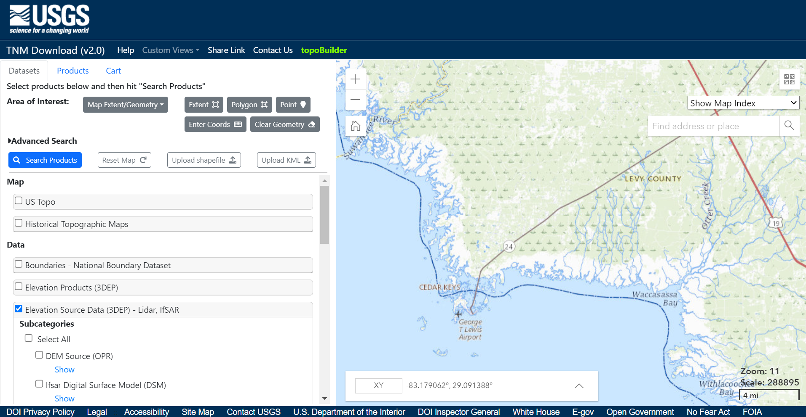

Downloading Lidar Data#
Whatever goals and software you have chosen for your project, the first step when working with Lidar data is downloading the point cloud. This tutorial will work with data from Florida’s Peninsular Lidar available at: https://apps.nationalmap.gov/downloader. Zoom into Cedar Key and select “Elevation Source Data (3DEP) - Lidar, IfSAR.” Click “Search Products.” Download the following products:
Cedar Key: USGS_LPC_FL_Peninsular_2018_D18_LID2019_445066_W.laz
{kind=link}
Using LAStools from the Command Prompt, you can summarize the point cloud data. The option -cd computes the point cloud density.
lasinfo -i "..\USGS_LPC_FL_Peninsular_2018_D18_LID2019_445066_W.laz -o ".\cedarkey.txt"
The output text file contains the following summary:
lasinfo (231025) report for ‘USGS_LPC_FL_Peninsular_2018_D18_LID2019_445066_W.laz’
reporting all LAS header entries:
file signature: |
‘LASF’ |
file source ID: |
0 |
global_encoding: |
17 |
project ID GUID data 1-4: |
918CD7FC-CC3A-44D0-0000-000000000000 |
version major.minor: |
1.4 |
system identifier: |
‘VQ1560i’ |
generating software: |
‘GeoCue LAS Updater’ |
file creation day/year: |
239/2021 |
header size: |
375 |
offset to point data: |
1594 |
number var. length records: |
3 |
point data format: |
6 |
point data record length: |
30 |
number of point records: |
0 |
number of points by return: |
0 0 0 0 0 |
scale factor x y z: |
0.01 0.01 0.01 |
offset x y z: |
0 0 0 |
min x y z: |
325000.00 1745000.00 -236.35 |
max x y z: |
330000.00 1750000.00 243.44 |
start of waveform data packet record: |
0 |
start of first extended variable length record: |
0 |
number of extended_variable length records: |
0 |
extended number of point records: |
20138813 |
extended number of points by return: |
17267249 2371680 454686 44956 240 2 |
variable length header record 1 of 3:
reserved |
0 |
user ID |
‘LASF_Projection’ |
record ID |
2112 |
length after header |
1019 |
description |
‘OGC WKT Coordinate System’ |
WKT OGC COORDINATE SYSTEM:
COMPD_CS[“NAD83(2011) / Florida West (ftUS) + NAVD88 height - Geoid12B (ftUS)”,PROJCS[“NAD83(2011) / Florida West (ftUS)”,GEOGCS[“NAD83(2011)”,DATUM[“NAD83_National_Spatial_Reference_System_2011”,SPHEROID[“GRS 1980”,6378137,298.257222101,AUTHORITY[“EPSG”,”7019”]],AUTHORITY[“EPSG”,”1116”]],PRIMEM[“Greenwich”,0,AUTHORITY[“EPSG”,”8901”]],UNIT[“degree”,0.0174532925199433,AUTHORITY[“EPSG”,”9122”]],AUTHORITY[“EPSG”,”6318”]],PROJECTION[“Transverse_Mercator”],PARAMETER[“latitude_of_origin”,24.33333333333333],PARAMETER[“central_meridian”,-82],PARAMETER[“scale_factor”,0.999941177],PARAMETER[“false_easting”,656166.667],PARAMETER[“false_northing”,0],UNIT[“US survey foot”,0.3048006096012192,AUTHORITY[“EPSG”,”9003”]],AXIS[“X”,EAST],AXIS[“Y”,NORTH],AUTHORITY[“EPSG”,”6443”]],VERT_CS[“NAVD88 height - Geoid12B (ftUS)”,VERT_DATUM[“North American Vertical Datum 1988”,2005,AUTHORITY[“EPSG”,”5103”]],UNIT[“US survey foot”,0.3048006096012192,AUTHORITY[“EPSG”,”9003”]],AXIS[“Gravity-related height”,UP],AUTHORITY[“EPSG”,”6360”]]]
variable length header record 2 of 3:
reserved |
0 |
user ID |
‘NIIRS10’ |
record ID |
4 |
length after header |
10 |
description |
‘NIIRS10 Timestamp’ |
variable length header record 3 of 3:
reserved |
0 |
user ID |
‘NIIRS10’ |
record ID |
1 |
length after header |
26 |
description |
‘NIIRS10 Tile Index’ |
the header is followed by 2 user-defined bytes
LASzip compression (version 3.4r3 c3 50000): POINT14 3
reporting minimum and maximum for all LAS point record entries …
X |
32500000 |
33000000 |
Y |
174500000 |
175000000 |
Z |
-23635 |
24344 |
intensity |
20556 |
65535 |
return_number |
1 |
6 |
number_of_returns |
1 |
6 |
edge_of_flight_line |
0 |
1 |
scan_direction_flag |
0 |
0 |
classification |
1 |
20 |
scan_angle_rank |
-29 |
29 |
user_data |
62 |
63 |
point_source_ID |
16218 |
16303 |
gps_time |
239895773.177126 |
239974345.060344 |
extended_return_number |
1 |
6 |
extended_number_of_returns |
1 |
6 |
extended_classification |
1 |
20 |
extended_scan_angle |
-4833 |
4833 |
extended_scanner_channel |
1 |
2 |
number of first returns: |
17267249 |
number of intermediate returns: |
499795 |
number of last returns: |
17267424 |
number of single returns: |
14895655 |
covered area in square units/kilounits: |
14766648/14.77 |
point density: |
all returns 1.36 last only 1.17 (per square units) |
spacing: |
all returns 0.86 last only 0.92 (in units) |
overview over extended number of returns of given pulse: |
14895655 3834052 1229087 178817 1190 12 |
histogram of classification of points:
9956641 |
unclassified (1) |
6932736 |
ground (2) |
710293 |
building (6) |
9612 |
noise (7) |
2470984 |
water (9) |
22826 |
bridge deck (17) |
827 |
Reserved for ASPRS Definition (18) |
34894 |
Reserved for ASPRS Definition (20) |
+-> flagged as synthetic: 28701
+—> 28701 of those are unclassified (1)
+-> flagged as withheld: 960549
+—> 960549 of those are unclassified (1)
+-> flagged as extended overlap: 1670499
+—> 1330674 of those are unclassified (1)
+—> 312450 of those are ground (2)
+—> 23858 of those are building (6)
+—> 3505 of those are water (9)
+—> 12 of those are Reserved for ASPRS Definition (18)